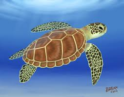
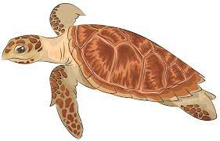
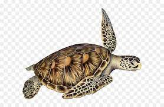
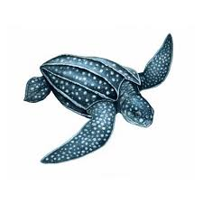

Green Turtle
The graceful green turtle is known for its vibrant green shell and gentle nature. It is one of the largest sea turtles and can be found in tropical and subtropical oceans around the world.They undertake long migrations and play a vital role in seagrass meadow conservation. However, they face threats from habitat loss, pollution, and illegal hunting.
Loggerhead Turtle
The loggerhead turtle is recognized by its large head and strong jaws. These resilient creatures migrate long distances and are known for their nesting habits on sandy beaches.They are named after their powerful logger-like head.

Leatherback Turtle
he leatherback turtle is the largest turtle species and can weigh over 900 kg. They are found in tropical waters around the world, including the waters of Sri Lanka. Leatherbacks are unique in that they do not have a hard shell but instead have a leathery skin with a series of ridges running down their back. They feed on jellyfish and other soft-bodied marine animals.
Olive Ridley Turtle
Olive Ridley turtles are the smallest and most abundant sea turtle found in Sri Lanka. They usually nest in large groups known as arribadas, where thousands of turtles come together to lay their eggs. Their diet consists of jellyfish, shrimp, and other small sea creatures.These turtles are known for their synchronized nesting behavior called "arribadas," where thousands of females come ashore simultaneously to lay their eggs.

Hawskbill Turtle
Hawksbill turtles are named after their narrow, pointed beak, which resembles a hawk's bill. These turtles are critically endangered and can be found in the coral reefs of Sri Lanka. They are known to feed on sponges, algae, and coral.They play a crucial role in maintaining the health of coral reefs by feeding on sponges, which helps prevent overgrowth.
Join the Conservation Efforts
Make a difference and protect these beautiful creatures by supporting sea turtle conservation organizations. Together, we can ensure their survival for future generations.
Donate Now| Name | Lifespan | Scientific Name | Image |
|---|---|---|---|
| Green Turtle | 80 years | Chelonia mydas |  |
| Olive Ridley Turtle | 50 years | Lepidochelys olivacea |  |
| hawksbill Turtle | 30-50 years | Eretmochelys imbricata |  |
| LoggerHead Turtle | 47-67 years | Caretta caretta |  |
| Leatherback Turtle | 45-50 years | Dermochelys coriacea |  |